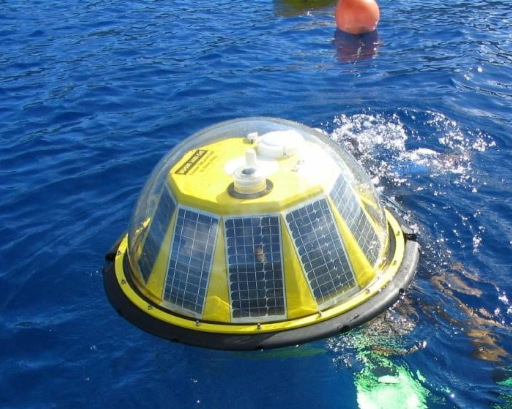
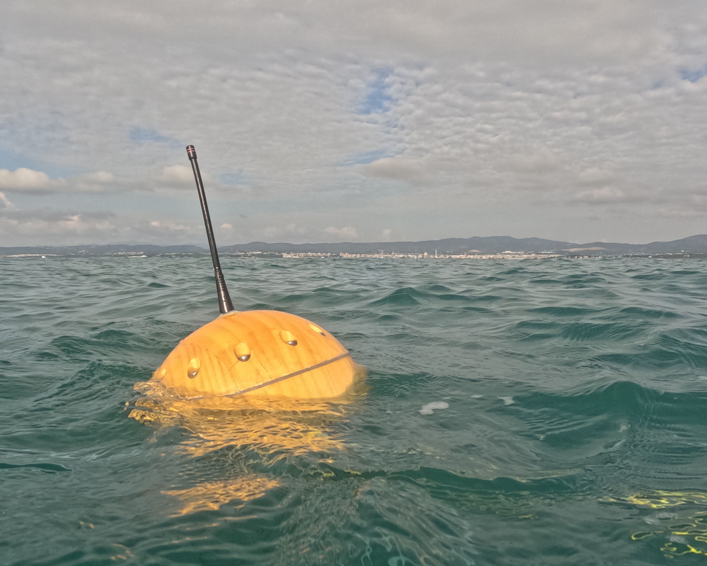
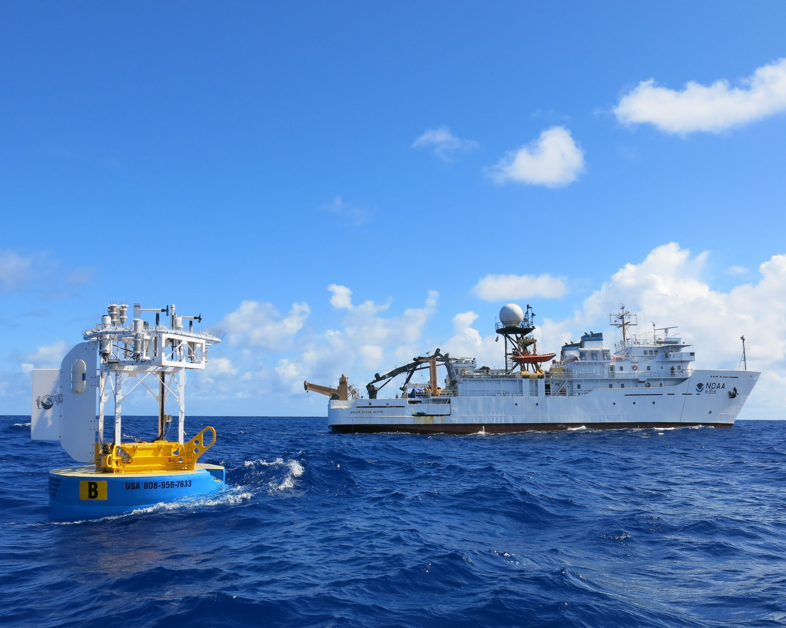

Data buoys, ocean observations, and DBCP activities.

Science Applications International Corporation (SAIC) Tsunami Buoy (STB) system by the Far Eastern Ecological Center, Yuzhno-Sakhalinsk, for the Far Eastern Regional Hydrometeorological Research Institute (FERHRI), Vladivostok, Russian Federation

The NOAA NWS National Data Buoy Center (NDBC) owns, operates, and maintains a network of tsunami buoy systems strategically located in open ocean throughout the Pacific, Atlantic, and Caribbean basins to measure and transmit water level variations as tsunami waves pass

DART® real-time tsunami monitoring systems, developed by PMEL, are positioned at strategic locations throughout the ocean and play a critical role in tsunami forecasting

PIRATA buoys are an observatory entirely dedicated to the study of ocean-atmosphere interactions in the Tropical Atlantic

Ray Graham and Nathan Smith of WHOI service Stratus23 buoy on March 18 2025. Photo: Maria Theresa Gatica (University de Concepcion, Chile)

TRIAXYS buoy measures and transmits directional wave data using the TRIAXYS solid state wave sensor, which provides near real-time access to continuous wave measurements. Photo: AXYS Technologies

Biodegradable wooden buoy created by the CLS Oceania built from accoya wood

The WHOI Hawaii Ocean Time-series Station (WHOTS)-19 buoy after deployment, with NOAA Ship Oscar Elton Sette in the background in June 2023. Photo: Nico Llanos

SVP BRST buoy is a drifting buoy fitted with a Sea Surface Temperature sensor (SST), a Barometric Pressure sensor, a Drogue presence sensor, a High Resolution Sea Surface Temperature sensor (HRSST), a GPS positioning and an IRIDIUM satellite communication to transmit its data.